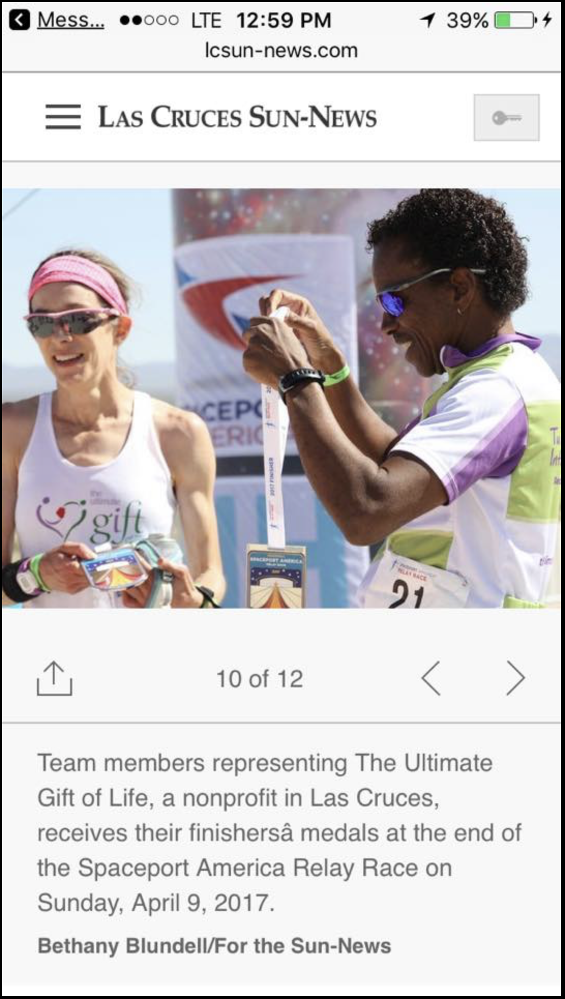
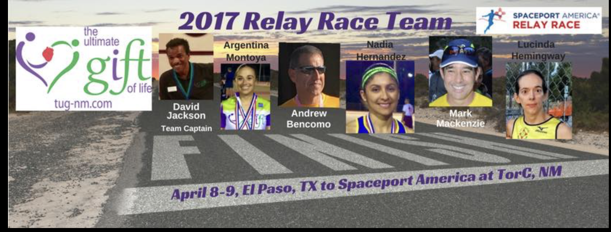
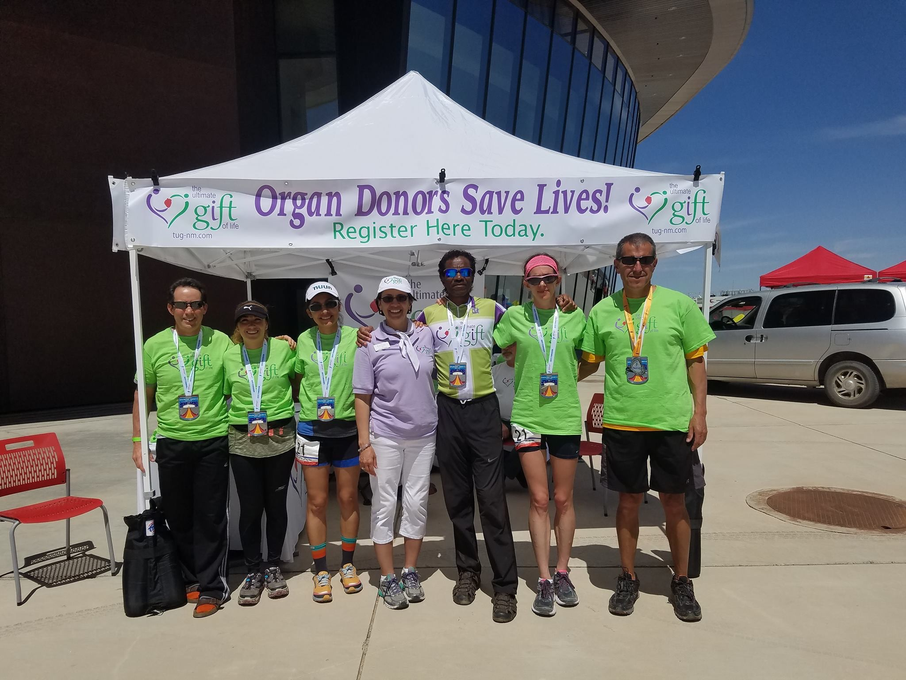
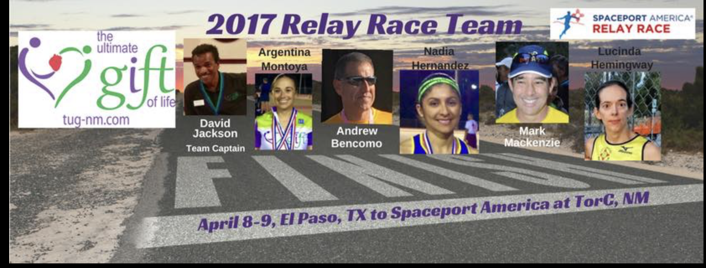
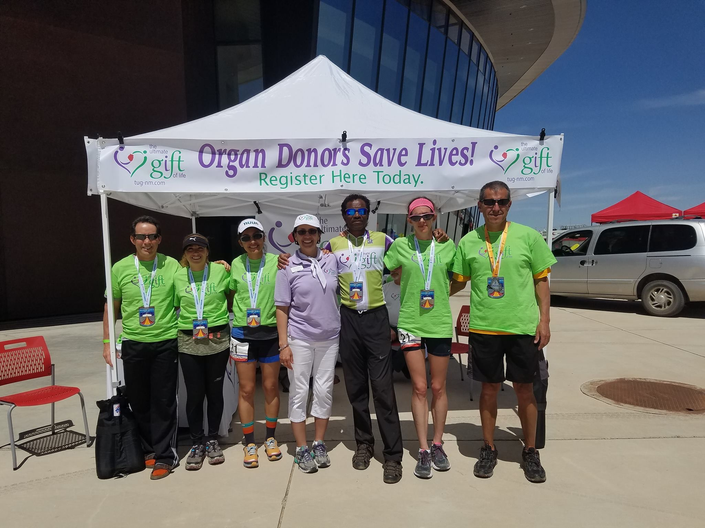

This race was called the Spaceprt Relay 24 hour race, we raced from El Paso, Texas to the Spaceport, NM. A friend called me to let me know that The Ultimate Gift of Life was going to run this to advertise, our goal was to have 12 person team, but we got only got 6, and the sixth one was last min, because someone could not do it. Staying up or not getting much sleep, not having a team(until David called me), and just having to run more milage than I ever ran before were scary concepts. This was one of the best things I have done in my entire life. The concept of the race scared me, but I loved how it was The Ultamate Gift of Life, and plus David said he needed someone fast. so how could I resist.
 


